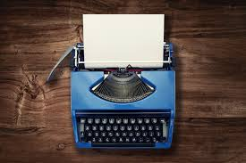

About the Typewriter
The typewriter is a mechanical device that allows you to write characters on paper. It was widely used during the 19th and 20th centuries before the advent of modern computers and word processors. The typewriter operates by pressing keys that strike an inked ribbon, imprinting characters onto a sheet of paper.
History
The first commercially successful typewriter was invented in 1868 by Christopher Latham Sholes. It revolutionized the way people wrote and created documents, making the process faster and more efficient. Over the years, the typewriter underwent many improvements, including the introduction of the QWERTY keyboard layout, which is still used on modern keyboards today.
Types of Typewriters
Explore our Classic and Modern typewriter options. With the Classic Typewriter, you'll enjoy the authenticity and elegance of a traditional typewriter, perfect for lovers of vintage and timeless. On the other hand, the Modern Typewriter combines the best of contemporary technology with avant-garde design, offering you a more stylish and sophisticated casing that fits into any modern environment. Both options are designed with the highest quality, ensuring a superior and long-lasting writing experience. Whether you prefer the retro charm of the classic or the innovative aesthetics of the modern, we have the ideal typewriter for you.